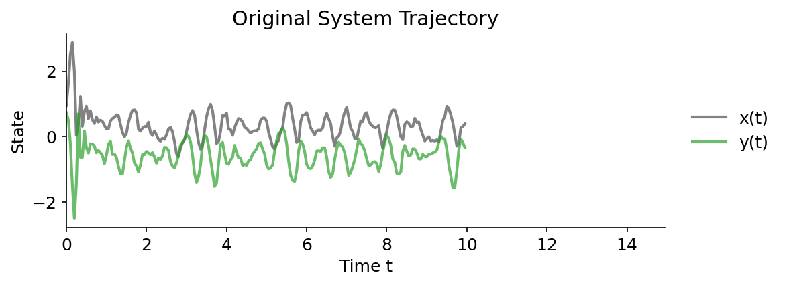
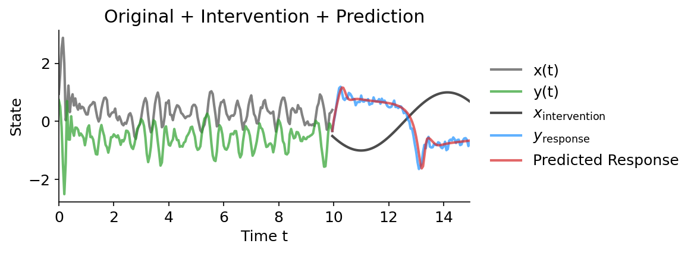

🌀 Interfere: Intervention Response Prediction in Complex Dynamic Models


Interfere is a comprehensive Python toolkit for simulating, intervening on, and optimizing forecasting methods to predict the behavior complex dynamical systems. It enables:
- Rich collections of continuous and discrete-time dynamic models (ODEs, SDEs, differnce equations, and more).
- Exogenous interventions to generate control and treatment scenarios at scale.
- Seamless forecasting integrations (SINDy, VAR, reservoir computing, ARIMA, LSTM, NHITS).
- Automated sliding-window cross-validation and hyperparameter tuning with Optuna.
- Unified error metrics and evaluation workflows for intervention-response prediction.
Interfere Benchmark Dataset (Download)

The image above depicts the uninterrupted trajectories of sixty dynamic models in blue and their response to a particular intervention in red. This data is available for download as the Interfere Benchmark 1.1.1. It can be used to benchmark a forecasting method's ability to predict the response of a dynamic system to interventions.
Installation
Install the core package from PyPI:
pip install interfere
For Nixtla-based forecasting methods (ARIMA, LSTM, NHITS), install the extras:
pip install interfere[nixtla]
Quick Start
The Interfere package is designed around three main tasks: counterfactual simulation, predictive method optimization, and prediction. Here's a complete example using the SINDy (Sparse Identification of Nonlinear Dynamics) method:
1. Counterfactual Simulation
First, let's create and simulate a dynamic model:
import numpy as np
import interfere
import optuna
# Set up simulation parameters
initial_cond = np.random.rand(3)
t_train = np.arange(0, 10, 0.05)
dynamics = interfere.dynamics.Belozyorov3DQuad(sigma=0.5)
# Generate trajectory
sim_states = dynamics.simulate(t_train, initial_cond)

2. Applying an Intervention
Next, we'll apply an intervention to one component of the system:
# Time points for the intervention simulation
test_t = np.arange(t_train[-1], 15, 0.05)
# Intervention initialization
intervention = interfere.SignalIntervention(iv_idxs=1, signals=np.sin)
# Simulate intervention
interv_states = dynamics.simulate(
test_t,
prior_states=sim_states,
intervention=intervention,
)
3. Model Optimization and Prediction
Using the generated data, we can run hyperparameter optimization with a forecasting method. All forecasting methods come with reasonable hyperparameter ranges built in.
# Select the SINDy method for hyperparameter optimization.
method_type = interfere.SINDy
# Create an objective function that aims to minimize cross validation error
# over different hyper parameter configurations for SINDy
cv_obj = interfere.CrossValObjective(
method_type=method_type,
data=sim_states,
times=t_train,
train_window_percent=0.3,
num_folds=5,
exog_idxs=intervention.iv_idxs,
)
# Run the study using optuna.
study = optuna.create_study()
study.optimize(cv_obj, n_trials=25)
# Collect the best hyperparameters into a dictionary.
best_param_dict = study.best_params
4. Intervention Response Prediction
Using the best parameters found, we can fit the forecasting method to pre-intervention data and then make a prediction about how the system will respond to the intervention.
# Initialize SINDy with the best perfoming parameters.
method = interfere.SINDy(**study.best_params)
# Use an intervention helper function to split the pre-intervention data
# into endogenous and exogenous columns.
Y_endog, Y_exog = intervention.split_exog(sim_states)
# Fit SINDy to the pre-intervention data.
method.fit(t_train, Y_endog, Y_exog)
# Use the inherited interfere.ForecastingMethod.simulate() method
# To simulate intervention response using SINDy
pred_traj = method.simulate(
test_t, prior_states=sim_states, intervention=intervention
)

The SINDy method identifies the underlying dynamics of the system using sparse regression techniques, making it particularly effective for discovering interpretable mathematical models of complex systems.
Documentation
- Simulation: Simulation engines and available dynamic models.
- Intervention: Exogenous intervention interfaces.
- Optimization: Automated cross-validation and hyperparameter tuning.
- Prediction: Counterfactual forecasting workflows.